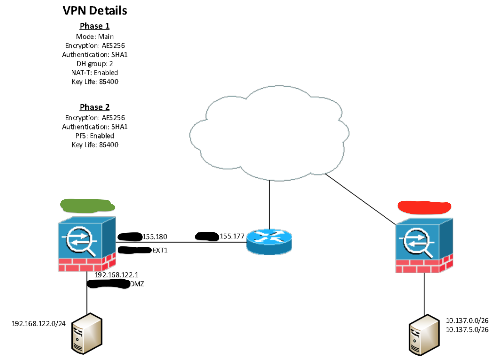

FortiGate¶
Site to Site VPN¶
In the below example, we are creating a VPN tunnel from 192.168.122.0/24 to 10.137.0.0/26 and 10.137.5.0/26.
Create the tunnel.
Check if there are current objects for the destination range(s) (10.137.0.0 & 10.137.5.0). There are ranges already, because this guide was created after the work was done. See the search bar at the top-right.
Create the objects for the destination range(s).
Find the interface(s) that the source range(s) are connected to. The servers that are needing to communicate to the destination (10.137.0.0 & 10.137.5.0) is 192.168.122.144, 192.168.122.145 & 192.168.122.146.
Find out what is currently allowed to the destination interface (DMZ) from the source IP addresses provided (192.168.122.144, 192.168.122.145 & 192.168.122.146). We know to search for “REDACTED” from the previous step.
Create the policy.
Management VDOM¶
You need the management VDOM (management-vdom root is default) and internet to keep the following alive:
AV/IPS updates
DNS queries
NTP time-sync
Webfilter rating look-ups
forticloud logging
SNMP, Email, alerting
In a multi-vdom environment, you can change the default vdom:
config global
config system global
set management-vdom <vdom_name>
end